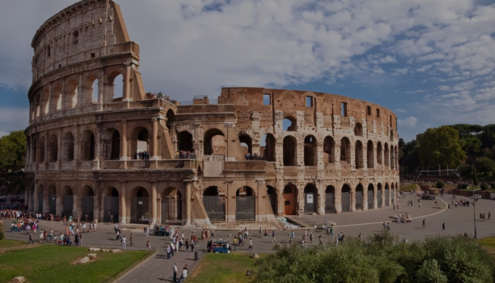
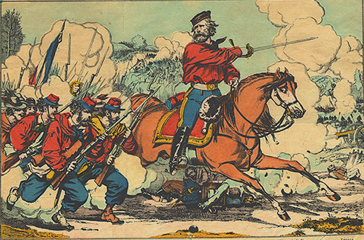
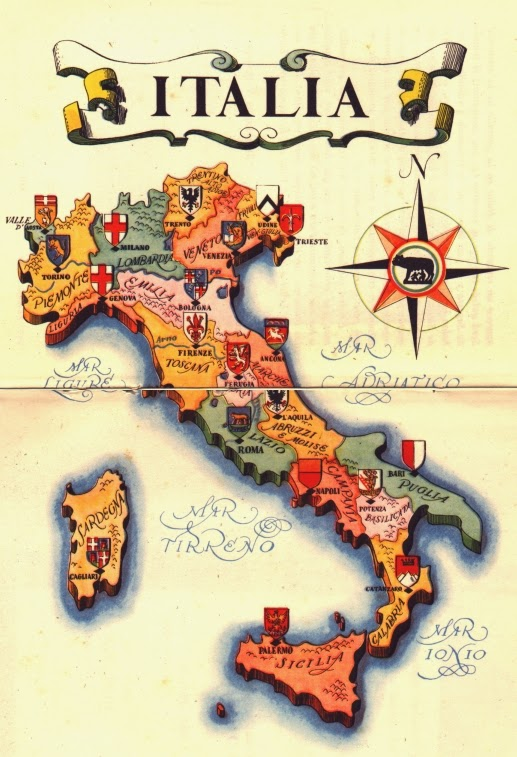
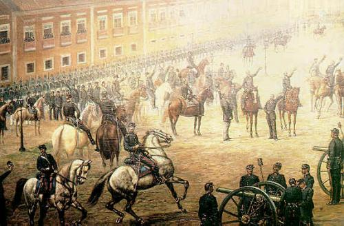

H
i
t
ó
r
i
a
"A ocupação da região onde hoje se encontra a Itália
data de ao menos três milênios antes da era atual,
quando os primeiros povos chegaram às ilhas mediterrâneas
que hoje pertencem ao país e foram gradualmente povoando as
terras continentais.
Diversas civilizações fizeram parte do território italiano,
com destaque para os gregos e os etruscos.
O comércio compunha a base da economia das áreas urbanas
formadas no território que viria a ser a Itália, e assim
permaneceu durante muitos séculos. Nesse ínterim,
desenvolveu-se a civilização romana, que estabeleceu
a cidade de Roma, ainda no século VIII a.C., e,
pouco tempo mais tarde, tornou-se um dos maiores impérios
da Antiguidade, conquistando áreas na Europa, África e Ásia.
O Império Romano chegou ao fim no século V d.C., e muitos
territórios que estavam sob o seu domínio se transformaram
em reinos ou passaram para o domínio germânico.
O período que vai do século XII ao século XVI é marcado pela
formação de grandes cidades-Estado e pela consolidação
como principal atividade econômica desenvolvida pelos territórios
em que se sobressaíram cidades como Florença, Veneza e Milão."


